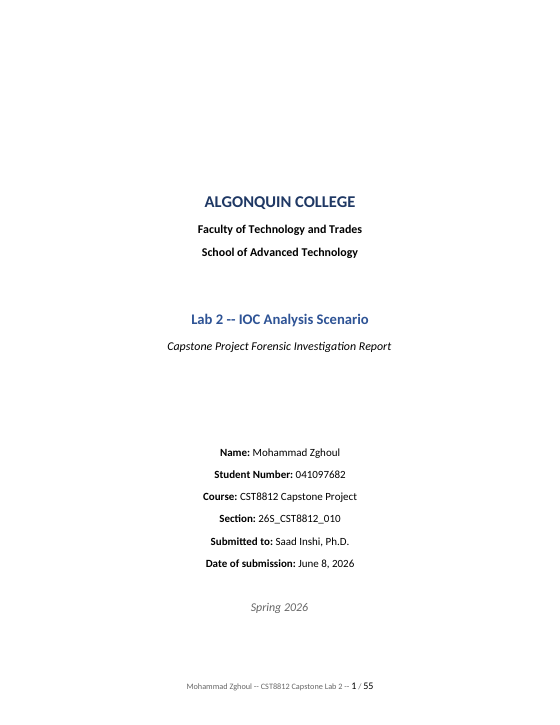

55 pp
Capstone · IOC Forensics / CST8812 · Term 2
IOC Analysis — Cobalt Strike Kill Chain
Reconstructed a multi-stage intrusion end-to-end: SQL injection → PowerShell download cradle → Cobalt Strike C2 → Mimikatz credential dumping → SMB lateral movement → ransomware staging — mapped to MITRE ATT&CK.
Security OnionKibanaZeekSysmonWireshark